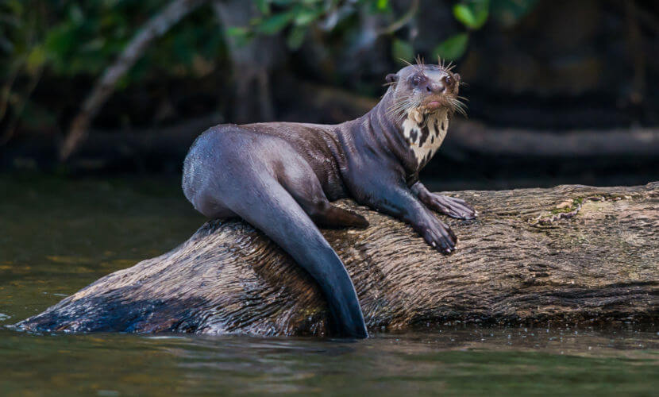
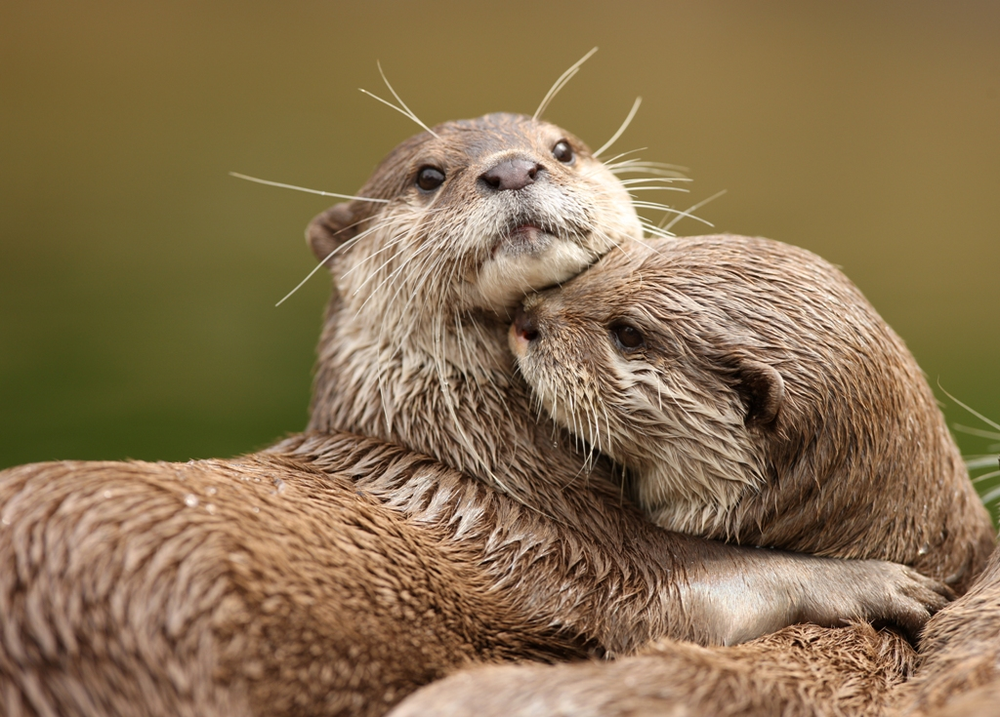
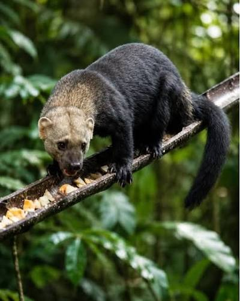

Parentes brasileiros do texugo-do-mel
| Animal | Informações sobre os parantes do texugo-do-mel | ||
|---|---|---|---|
| Nome Científico | Porte | Características | |
| Ariranha | Pteronura brasiliensis | Grande | Maior lontra do mundo, vive em grupos familiares nos rios |
| Lontra | Lontra longicaudis | Médio | Solitária e ótima nadadora, depende de rios com água limpa |
| Irara | Eira barbara | Corpo escuro e cabeça clara, sobe em árvores e adora mel | |
| Furão | Galictis cuja | Pequeno | Corpo longo e baixo, dorso acinzentado e faixa branca na testa |
| Doninha | Neogale africana | Pequena e rara, vive em florestas próximas a rios da Amazônia | |

Ariranha
A Ariranha, de nome científico Pteronura brasiliensis, é a maior lontra do mundo e pode chegar a 1,8 metro de comprimento contando a cauda. Vive em grupos familiares nos rios e lagos do Pantanal e da Amazônia. É uma excelente nadadora: suas patas têm membranas entre os dedos e a cauda achatada funciona como um leme. Alimenta-se principalmente de peixes e se comunica com uma grande variedade de sons. Cada ariranha tem uma mancha clara no pescoço com formato único, que permite identificar os indivíduos. É uma espécie ameaçada de extinção, principalmente pela perda de habitat e pela poluição dos rios.

Lontra
A Lontra, cujo nome científico é Lontra longicaudis, é encontrada em rios, lagos e até no litoral de quase todo o Brasil, inclusive no interior paulista. Diferente da ariranha, costuma viver sozinha e é bem mais difícil de ser vista. Tem corpo alongado, pelagem marrom e densa, que a protege da água fria, e uma cauda longa e musculosa. É muito ágil dentro da água e se alimenta principalmente de peixes e crustáceos. Por depender de águas limpas, a presença da lontra em um rio é considerada um sinal de boa qualidade ambiental.

Irara
A Irara, de nome científico Eira barbara, tem o corpo escuro e a cabeça mais clara, acinzentada ou amarelada, e pode passar de 1 metro de comprimento contando a cauda. Vive em florestas de quase todo o Brasil e é uma ótima escaladora, subindo em árvores com facilidade, embora também passe muito tempo no chão. Tem alimentação onívora, que inclui pequenos animais, ovos e frutos. Assim como seu parente africano, o texugo-do-mel, adora mel, e por isso também é conhecida como papa-mel. Diferente de muitos parentes, é mais ativa durante o dia.